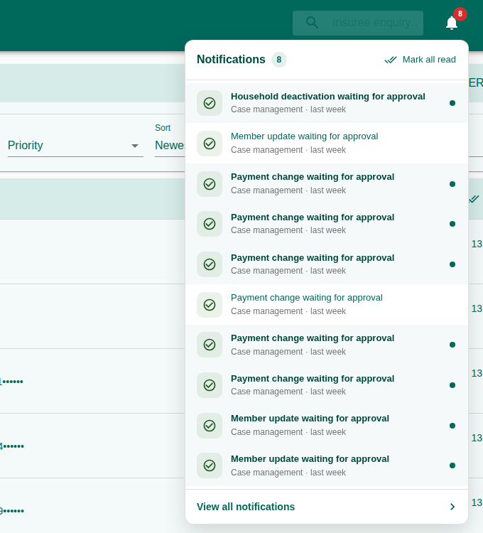
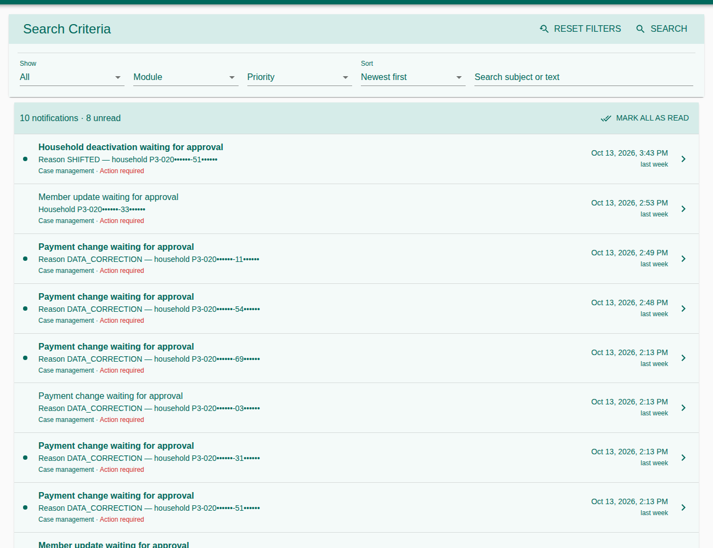
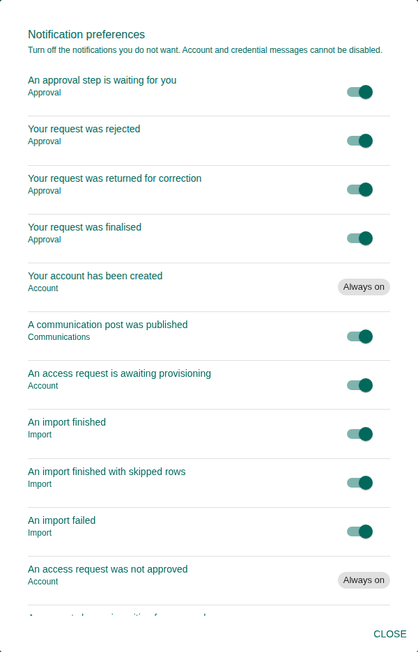

How TASAF MIS tells you when something needs your attention, and how to manage those messages. Notifications arrive in the bell at the top of every page: an approval waiting for you, an import that finished, a GePG verification answered, a case change to decide.
1. The Notification Bell
The bell in the top bar shows how many notifications are unread. Click it to see the latest; click one to open the page it concerns (e.g. the approval request or the paylist). Mark all read clears the count; View all notifications opens the full page.


2. The Notifications Page
Lists every notification with its module, priority, subject and date. Show All or Unread, filter by module and priority, search the subject or text, and sort newest or oldest first. Mark all as read clears every unread one.


| Priority | Meaning |
|---|---|
| Information | For your information; nothing to do. |
| Action required | Something waits for you, e.g. an approval. |
| Warning | Something went wrong and may need follow-up. |
3. What You Are Notified About
| Module | Examples |
|---|---|
| Approval | A step is waiting for you; your request was approved, rejected or returned. |
| Account | Account and access-request messages (always on). |
| Import | An individual or ETL import finished, partly succeeded or failed. |
| Payments | GePG answered a verification request; MUSE accepted or rejected a paylist; accounts withdrawn because of a wrong-provider number. |
| Case management | A change in your districts is waiting for a decision. |
| Communication | A post or activity waiting for approval, or decided. |
Who receives a notification follows their rights and districts: for example, a case change goes to the approvers of the household's district.
4. Notification Preferences
On the Notifications page, press Preferences. Turn off the kinds you do not want. Those marked Always on (account and credential messages) cannot be turned off.


5. Troubleshooting
| Problem | What to do |
|---|---|
| I expected a notification but got none | Check your preferences, and that your role and districts make you a recipient. |
| The count does not go down | Use Mark all read, or open each notification. |
| I get no emails | Notifications are shown in the application; email depends on the server's mail set-up. |